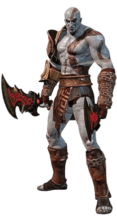
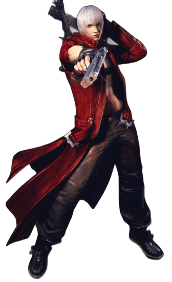
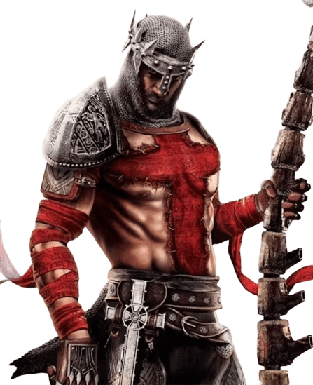

Kratos
Guerreiro espartano que se tornou o Fantasma de Esparta. Movido pela vingança contra deuses e monstros, é marcado por sua força brutal e pela tragédia em sua vida.
God of War

Dante
Caçador de demônios meio-humano, meio-demônio. Conhecido pelo humor sarcástico, sua espada Rebellion e suas pistolas Ebony & Ivory. Luta para proteger o mundo dos demônios.
Devil May Cry

Dante
Cavaleiro cruzado que atravessa os Nove Círculos do Inferno para resgatar a alma de sua amada Beatriz. Baseado no clássico literário de Dante Alighieri.
Dante’s Inferno
Simon Belmont
Caçador de vampiros da família Belmont, destinado a enfrentar o Conde Drácula. Usa o lendário chicote Vampire Killer como arma principal.
Castlevania